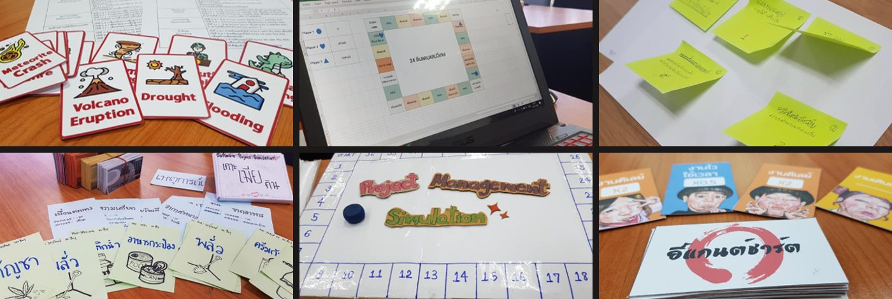

Software Project Management
How software projects are started, defined, planned, built and closed: estimation, scheduling, risk, monitoring and the people side, with drills for every calculation.
Suggested path
- Topics → Start here: the project life cycle and the CanteenGo example used on every topic page.
- Read each topic's plain explanation first; open "Lecture detail" for the full lists and worked examples.
- When a word or short form is new, click it under "Words to know", or search Terms.
- After each topic, run Flashcards and a short Quiz for that topic.
- Practise the calculations: Critical path, Cost estimation, Cash flow, Risk exposure, Earned value.
- Use the Cheat sheet for a last look before the exam.
Foundations
Topics 1–4. What project management is, team roles, why software projects fail, professional ethics and the software business.
Initiation and definition
Topics 5–8. Needs assessment and SWOT, goals and scope, organisational structure, cost estimation and feasibility.
Planning
Topics 9–11. Recruiting, budgeting, WBS and Gantt charts, critical path and PERT, risk management.
Implementation and closing
Topics 12–13. Development approaches, earned value, change and conflict management, reviews and handover.
Where each topic is practised
| Topic | Drill |
|---|---|
| T1 | Team roles, flashcards, quiz |
| T2–T4 | Flashcards, quiz |
| T5 | SWOT sorter |
| T6 | Flashcards, quiz |
| T7 | Cost estimation |
| T8 | Cash flow |
| T9–T10 | Critical path |
| T11 | Risk exposure |
| T12 | Earned value |
| T13 | Flashcards, quiz |
Topics
Each topic starts with a plain explanation built on one small example. The full lists, tables and worked examples are in the closed "Lecture detail" block at the end of each topic.
0 Start here: the life of a project
A project has a start, an end and something unique to deliver. Running a canteen every day is operations; building an app that lets students pre-order canteen food is a project. Every project lives inside three limits that pull against each other: scope (what it must do), time (when it must be done) and cost (how much it may spend). Add features and it takes longer or costs more; cut the budget and something else gives.
A project succeeds when it is on scope, on time and on budget. It is challenged when it misses any one of those. It fails when it is cancelled or never delivered.
The life of a project
| Phase | Question it answers | Topics |
|---|---|---|
| Initiation | Is there a real need, and who will pay for it? | T5 |
| Definition | What exactly are we building, who decides, what will it cost, is it worth it? | T6 · T7 · T8 |
| Planning | Who does what, in what order, by when, and what could go wrong? | T9 · T10 · T11 |
| Implementation | How do we build it, track it and handle change? | T12 |
| Decommissioning | How do we hand it over, reward the team and learn from it? | T13 |
Topics 1 to 4 come first because they shape every phase: what project management is, why software projects are especially hard, the ethics you work under, and the business world the software is sold into.
The example used on every Topics page
A five-person student team is asked to build CanteenGo, an app that lets students order canteen food ahead and skip the queue. Each topic shows what that topic looks like on CanteenGo.
Words to know
- A project is temporary, unique and limited by scope, time and cost.
- Five phases: initiation, definition, planning, implementation, decommissioning.
1 Concepts of project management
Definitions differ in wording but agree on the idea: plan, organise and control a team's work so the project meets its goals within its limits.
Project or program?
A project is one piece of temporary work. A program is a group of related projects run together inside an organisation. CanteenGo is a project; the university's whole "digital campus" effort, with CanteenGo, a library app and a parking app, is a program.
The 4Ps of project management
| P | Means | On CanteenGo |
|---|---|---|
| People | The team and everyone with a stake. The most important element. | Who codes, who talks to the canteen, who tests |
| Product | The software or service being delivered | Ordering, payment, pick-up notification |
| Process | The framework used to build it | Two-week sprints with a demo each time |
| Project | Overall management and monitoring | Weekly progress check against the plan |
Stakeholders
Anyone affected by the project. Sponsors pay, customers say what they need, end-users actually use it, executives set business direction, project managers plan and control, practitioners build. On CanteenGo the faculty sponsors it, the canteen owner is the customer, and students are the end-users.
Team roles (Belbin)
People naturally take different roles in a team. Belbin's model names nine. A good team has a balance: someone who generates ideas, someone who checks them, someone who finishes the details.
| Role | Short | Typical strength |
|---|---|---|
| Plant | PL | Clever, creative, produces ideas |
| Resource Investigator | RI | Energetic, finds contacts and ideas outside the team |
| Coordinator | CO | Calm, mature chairperson who clarifies goals and delegates |
| Shaper | SH | Driving, challenging, high need to achieve |
| Monitor Evaluator | ME | Serious, critical thinker who judges options |
| Teamworker | TW | Social, trusting, keeps the team together |
| Implementer | IM | Disciplined; turns ideas into practical action |
| Completer Finisher | CF | Perfectionist who catches errors and finishes on time |
| Specialist | SP | Deep expert in one subject |
What success looks like
The project met its scope, time and cost goals, satisfied the customer or sponsor, and delivered its main objective (for example, saved money or gave a good return). The factors most linked to success: executive support, user involvement, an experienced project manager, clear business objectives, minimised scope, a standard approach and reliable estimates.
Words to know
- 4Ps: people, product, process, project. People matter most.
- Sponsors fund; customers specify; end-users use.
- Belbin: a balanced team mixes thinking, people and action roles.
Lecture detail
Three definitions of project management
- Supervising the work of a team to achieve all project goals within the given constraints.
- Planning, organising, staffing, directing and controlling the production of a system.
- Applying knowledge, skills, tools and techniques to project activities to meet project requirements (Project Management Institute).
Key issues per P
| P | Key issues |
|---|---|
| People | Short term: recruiting, selection, performance management. Long term: training, compensation, career development, organisation and work design, team and culture development. |
| Product | Clear objectives and scope, alternative solutions, technical and management limits, estimate of costs, benefits and break-even point. Critical issues: information objectives, function and performance, unambiguous scope. |
| Process | Task sets (tasks, milestones, work products, QA points) and umbrella activities (quality assurance, configuration management, measurement). Choose the development model to suit the customers, the product and the environment. |
| Project | Manage complexity, avoid failure, use a common-sense approach to planning, monitoring and control. |
Stakeholders
| Stakeholder | Role |
|---|---|
| Executives | Define business issues |
| Project (technical) managers | Plan, motivate, organise and control the practitioners |
| Practitioners | Deliver the technical skills |
| Customers | Specify the requirements |
| End-users | Use the software once released |
| Sponsors | Provide funds and judge overall success |
Essential project-manager skills
People skills, leadership, listening, integrity and consistent ethical behaviour, building trust, verbal communication, team building, conflict resolution, critical thinking and problem solving, balancing priorities.
Belbin roles: alternative names
Implementer is also called Company Worker or Executive; Coordinator, Chairperson; Plant, Innovator; Resource Investigator, Explorer; Shaper, Driver; Monitor Evaluator, Analyst; Teamworker, Team Player; Completer Finisher, Finisher; Specialist, Expert. The week 1 activity forms companies of four to five people and takes a team-roles test.
Key approaches
- Start on the right foot: work hard to understand the problem.
- Maintain momentum: provide incentives.
- Track progress: track work products.
- Make smart decisions: keep it simple.
- Conduct a postmortem: lessons learned and evaluation.
Phases and their tasks
| Phase | Tasks |
|---|---|
| Initiation | Needs assessment; customer and funding-source identification |
| Definition | Goals, authority, estimating, feasibility analysis |
| Planning | Recruiting, budgeting, work breakdown, targets, make-or-buy, scheduling, plans, proposal and bidding |
| Implementation | Managing contracts, monitoring, identifying problems, re-planning, adjusting targets |
| Decommissioning | Resolving operating problems, rewarding and reassigning personnel, review, evaluation, storing reference data |
Effort rises through definition and planning, peaks in implementation, and falls in decommissioning.
Proverbs worth remembering
- One woman takes nine months to have a baby; nine women cannot do it in one month. Adding people does not always shorten work.
- Any project can be estimated accurately, once it is completed.
- The sooner you begin coding, the later you finish.
- What is not on paper has not been said.
- If you fail to plan, you are planning to fail.
2 Why software projects are different
You can see half a bridge. You cannot see half a program. That one difference explains most of this topic.
Why software projects are different
- Abstract: progress is hard to see and measure.
- Creative: every project builds something new, so past experience only partly applies.
- Requirements move: users often learn what they want by seeing early versions.
- Users are involved: their time, opinions and changes shape the work.
- Unpredictable: hidden technical problems appear late.
Building software is closer to designing than to manufacturing. A factory repeats the same object; a software team makes something new every time. That is why a software manager is expected to understand programming, much as an editor is expected to be able to write.
How often they succeed
| Result | Meaning | Share (2023 CHAOS study) |
|---|---|---|
| Success | On scope, on time, on budget | 30% |
| Challenged | Scope creep, or late, or over budget | 50% |
| Failed | Cancelled or not delivered | 20% |
Two different life cycles
The project cycle is about managing: Initiation, Definition, Planning, Implementation, Decommissioning. The software development life cycle (SDLC) is about building: Feasibility, Analysis, Design, Development, Implementation, Testing, Maintenance. They run side by side. For CanteenGo, the "Planning" phase of the project produces the schedule that the "Design" and "Development" steps of the SDLC then follow.
Words to know
- Software is abstract, creative and unpredictable.
- About 30% succeed, 50% are challenged, 20% fail.
- The project cycle manages; the SDLC builds.
Lecture detail
The 2023 CHAOS figures
50% of IT projects were late, over budget, or delivered fewer functions than promised; 20% were considered failed; only 30% were judged successful. Project size and the software process both affect success.
Seven laws of IT projects (summary)
- A major project is never finished on time, on budget, with the original team, doing exactly what was intended.
- Projects reach 85% complete quickly, then stay at 85% for a long time.
- When things look fine, something has been overlooked.
- A carelessly planned project takes three times longer than expected; a carefully planned one, twice as long.
- Ten estimators estimate the same work ten different ways.
- Too few people cannot solve the problems; too many create more problems than they solve.
Project cycle vs SDLC
Software project cycle (5 phases): Initiation → Definition → Planning → Implementation → Decommissioning.
Software development life cycle (7 steps): Investigation or feasibility study → Analysis → Design → Development → Implementation → Testing → Maintenance.
The project cycle manages the work; the SDLC builds the product. In practice, the "real" project cycle loops back between phases rather than running once in a straight line.
3 Ethics in the computing profession
Software changes people's lives, so the people who build it carry responsibility for its effects. The ACM Code of Ethics and Professional Conduct sets this out in four groups.
| Part | Plain meaning | On CanteenGo |
|---|---|---|
| 1. General principles | Benefit society, avoid harm, be honest, be fair, respect others' work, privacy and confidentiality | Do not sell students' order history to advertisers |
| 2. Professional responsibilities | Do high-quality work, stay competent, follow rules, accept review, assess risks, work only within your competence, build secure systems | Say so if nobody on the team knows how to handle payments safely |
| 3. Leadership principles | Put the public good first, look after the people you manage, help them grow, take care when changing or retiring systems | Warn users before shutting down the old ordering method |
| 4. Compliance with the Code | Uphold the Code; violations are inconsistent with ACM membership | — |
Words to know
- Four parts: general, professional, leadership, compliance.
- Work only within your competence; respect privacy and confidentiality.
Lecture detail
The four parts of the ACM Code
| Part | Principles |
|---|---|
| 1 General | 1.1 Contribute to society and human well-being · 1.2 Avoid harm · 1.3 Be honest and trustworthy · 1.4 Be fair and do not discriminate · 1.5 Respect the work needed to produce new ideas and creative works · 1.6 Respect privacy · 1.7 Honour confidentiality |
| 2 Professional | 2.1 High quality in process and product · 2.2 High standards of competence and conduct · 2.3 Know and respect the rules · 2.4 Accept and provide professional review · 2.5 Thorough evaluation of systems and their risks · 2.6 Work only within your competence · 2.7 Foster public understanding of computing · 2.8 Access resources only when authorised · 2.9 Build robustly and usably secure systems |
| 3 Leadership | 3.1 Public good first · 3.2 Promote social responsibility in the group · 3.3 Improve the quality of working life · 3.4 Support policies that reflect the Code · 3.5 Help members grow as professionals · 3.6 Take care when changing or retiring systems · 3.7 Take special care with systems integrated into society's infrastructure |
| 4 Compliance | 4.1 Uphold, promote and respect the Code · 4.2 Treat violations as inconsistent with ACM membership |
The week 3 activity is a theatrical case study of a software business.
4 Software business
The marketing mix (4Ps)
| P | Decisions | On CanteenGo |
|---|---|---|
| Product | Functionality, appearance, quality, packaging, brand, warranty, support | Fast ordering, clean design |
| Price | Pricing strategy, discounts, financing, leasing | Free for students, small fee per order for the canteen |
| Place | Target customers, intermediaries, market share, locations, logistics | Campus canteens first |
| Promotion | Advertising, public relations, media | Posters, first-order discount |
A newer view, the 4Es, re-reads the same four from the customer's side: Experience (instead of Product), Exchange (Price), Everyplace (Place) and Evangelism (Promotion).
PDCA: the improvement loop
Plan a change, Do it on a small scale, Check the result, Act on what you learned, then repeat. Also called the Deming cycle.
BCG growth-share matrix
Places each product by market growth and market share, to decide where to invest.
| High market share | Low market share | |
|---|---|---|
| High market growth | Star: invest to keep leading | Problem child (question mark): invest or drop |
| Low market growth | Cash cow: earns money with little investment | Dog: consider leaving |
Platform Wars
A business simulation game from MIT played in class. Each team runs a video-game console company for ten simulated years, choosing the console price, which game titles to subsidise and what royalty fee to charge, and tries to reach the highest cumulative profit.
Words to know
- Marketing 4Ps: product, price, place, promotion.
- BCG: star, cash cow, problem child, dog.
- PDCA: plan, do, check, act.
Lecture detail
Industry figures
- The worldwide software industry was expected to reach about US$745 billion (about 24 trillion baht) in 2025; Thailand's 2024 government budget was 3.75 trillion baht.
- The USA held 51% of the global software market's value in 2024.
- The largest tech companies by market value in 2025: Microsoft, Nvidia, Apple, Amazon, Alphabet, Meta, Tesla, Broadcom, TSMC, Tencent.
- Networked Readiness Index 2024: Thailand ranked 40th (USA 1st, Singapore 2nd).
Thai organisations
| Organisation | Short |
|---|---|
| Digital Economy Promotion Agency | DEPA |
| Software Park Thailand | — |
| National Electronics and Computer Technology Center | NECTEC |
| The Association of Thai Software Industry | ATSI |
| Thailand Creative and Design Center | TCDC |
| Ministry of Digital Economy and Society | MDES |
Most demanded skills in 2025 (Adecco)
Data analysis; leadership and management; machine learning and AI; project management; customer relationship management; cybersecurity; digital marketing; sustainability knowledge; financial literacy; product management.
Monthly salary ranges in Thailand, 2025 (Adecco, baht)
| Position | New graduate | 1–5 years | 5+ years |
|---|---|---|---|
| Network Engineer | 30,000–45,000 | 30,000–60,000 | 50,000–70,000 |
| Software Engineer | 30,000–70,000 | 80,000–150,000 | 120,000–200,000 |
| Software Tester | 30,000–35,000 | 40,000–80,000 | — |
| Project Manager | — | 80,000–140,000 | 100,000–170,000 |
| IT Manager | — | 60,000–130,000 | 80,000–140,000 |
| IT Support | 20,000–40,000 | 30,000–50,000 | — |
Case-study questions
From the story of a famous start-up: Do you need to drop out of university to make this happen? What were the founders good at, and what roles did they really play? Who would you like to work with, and why? What kind of leader would you like to be? What do you need to fulfil your dream?
5 Project initiation
Before anyone plans, someone must show the project is worth starting. For CanteenGo that means proving students really waste time in queues, and finding who would pay to fix it.
Finding the need
Four ways to learn what is needed: brainstorming inside the team, a stakeholder meeting, a survey (interviews for depth, questionnaires for numbers), and other methods such as observation, workshops and prototypes.
Brainstorming tools
| Tool | What it does | On CanteenGo |
|---|---|---|
| Fishbone diagram | Lists the causes of one problem, grouped by category (people, methods, machines, materials, measurements, environment) | Why queues are long: one cashier, cash only, everyone arrives at 12:00 |
| Force field analysis | Weighs forces for a change against forces against it | For: saves time. Against: canteen staff must learn a new system |
| SWOT analysis | Lists Strengths, Weaknesses (inside), Opportunities, Threats (outside) | S: team knows Flutter. T: a delivery app could add campus pick-up |
| TOWS matrix | Pairs SWOT items to produce strategies | Use Flutter skill (S) to launch before the delivery app moves in (T) |
| Mind mapping | Branches ideas out from one central idea | "CanteenGo" in the middle; menus, payment, pick-up around it |
SWOT in one picture
| Helpful to the goal | Harmful to the goal | |
|---|---|---|
| Internal (the team or organisation) | Strengths | Weaknesses |
| External (the environment) | Opportunities | Threats |
Finding the money
Identify customers or funding sources, then sell the idea: know your audience, say what makes it unique, be confident, avoid jargon, and practise on a stranger first. Connections matter.
Words to know
- Initiation = needs assessment + funding source.
- SWOT: S and W inside, O and T outside.
- TOWS turns SWOT into SO, WO, ST and WT strategies.
Lecture detail
Fishbone (Ishikawa, cause-and-effect) diagram
The effect sits at the head; causes branch off the spine under categories. Example: "students cannot complete the project in time" with causes under people (poor time management, lack of skills), method (poor team communication), environment (deadline too close to exams) and material.
Force field analysis examples
| Change | Forces for | Forces against |
|---|---|---|
| Buying a new laptop | Faster processing, more storage, runs heavy programs, showing off | Price, subscription costs, lack of space, learning curve, weight |
| Upgrading factory equipment | Control rising costs, more output, faster production, new products | Loss of staff overtime, fear of new technology, environmental impact, cost, disruption |
SWOT and TOWS
Thai mnemonic for SWOT: เจ๋ง-ห่วย-เฮง-ซวย (strong, weak, lucky, unlucky). The TOWS matrix crosses the lists:
| Cell | Label in the lecture | Usual reading |
|---|---|---|
| SO | Make the most of these | Use strengths to seize opportunities |
| WO | Watch competition closely | Fix weaknesses by taking opportunities |
| ST | Restore strengths | Use strengths to counter threats |
| WT | Strategic turnaround required | Reduce weaknesses and avoid threats |
A TOWS worksheet lists S1–S4 across and O1–O4 down, and writes an action in each useful cell (e.g. action S1O2).
How to map your mind
Start in the centre, do not be serious, free-associate, think fast, break boundaries, do not judge, keep moving, add relationships and connections. Uses: problem solving, outlining, anonymous collaboration, condensing material, team building.
Stakeholder meeting and surveys
Attendees can include the project leader, team members, executives, customers, users, testers, consultants, auditors and sponsors. Qualitative surveys use in-depth interviews; quantitative surveys use questionnaires, where about 400 responses are generally taken as enough to describe a general population.
Funding sources in Thailand
NECTEC; Thailand Science Research and Innovation (TSRI); DEPA; the Energy Policy and Planning Office (EPPO); the northern network of the National Science and Technology Development Agency (NN-NSTDA).
Ten tips for selling an IT project
Focus on your audience; state a unique selling proposition; short, logical sub-points; be confident and enthusiastic; project your voice; keep eye contact; no gimmicks; no jargon or acronyms; practise; test it on a stranger.
6 Goals, scope and authority
From vision to activity
Organisations describe their direction at several levels. The higher the level, the longer-term and less measurable it is.
| Term | Plain meaning |
|---|---|
| Vision | The long-term ideal the organisation strives for |
| Mission | Its purpose and what it aims to achieve in the shorter term |
| Goal | A specific, measurable target that serves the vision and mission |
| Objective | A specific, measurable step towards a goal |
| Activity | The work actually done to reach an objective |
Each level is judged by a different kind of result: an activity by its output, an objective by its outcome, a goal by its impact. For CanteenGo: activity "build the order screen" → output "a working screen"; objective "students can pre-order" → outcome "300 orders a week"; goal "less time lost at lunch" → impact "average queue time halves".
Scope
The shared agreement on what is included and what is not. Writing down "no delivery, pick-up only" early stops arguments later. A scope statement usually lists objectives, acceptance criteria, boundaries, assumptions, deliverables, early risks, milestones, the work breakdown and a budget summary.
Authority and structure
Agree at the start who decides what. How much power the project manager has depends on how the organisation is structured:
| Structure | How staff are grouped | Project manager's power |
|---|---|---|
| Functional | By department (developers, customer service, marketing) | Low; part time |
| Matrix | By department, with project managers (often a PMO) cutting across | Medium; full time |
| Project | By project team | High; full time |
Words to know
- Activity → output, objective → outcome, goal → impact.
- Scope says what is in and out.
- PM authority: functional low, matrix medium, project high.
Lecture detail
All ten direction terms
| Term | Thai | Meaning |
|---|---|---|
| Philosophy | ปรัชญา | Fundamental approach and guiding beliefs |
| Vision | วิสัยทัศน์ | Long-term aspirational ideal |
| Mission | พันธกิจ / ภารกิจ | Purpose and shorter-term aims |
| Goals | เป้าหมาย | Specific, measurable targets serving vision and mission |
| Objectives | วัตถุประสงค์ | Specific, measurable steps towards goals |
| Values | ค่านิยม | Guiding principles in operations, e.g. integrity, accountability, transparency |
| Principles | หลักการ | Fundamental beliefs that shape actions and decisions |
| Culture | วัฒนธรรมองค์กร | Shared values, beliefs and practices |
| Resolution | ปณิธาน | Formal statement of intent or decision |
| Activities | กิจกรรม | The work carried out |
Logical Framework Analysis (LFA)
A table with one row per goal, objective and activity, and four columns: narrative summary, expected results (impact, outcome, output), performance indicators, and risks. Each goal breaks into objectives, each objective into activities.
Comparison of structures
| Functional | Matrix | Project | |
|---|---|---|---|
| PM's authority | Low (1/5) | Medium (3/5) | High (5/5) |
| PM's role | Part time | Full time | Full time |
| Probability of success | Low (1/5) | Medium (3/5) | High (5/5) |
| Team morale | High (4/5) | High (4/5) | Low (2/5) |
| Possibility of conflicts in the chain of command | High (4/5) | High (4/5) | Low (2/5) |
The lecture asks whether two responsible people (dual managers) is a good idea, and notes staff may be shared between projects.
7 Resource estimation
"About three months" is a guess. Estimation methods replace the guess with a repeatable calculation, so two people get similar answers and the estimate can be explained.
| Method | Measures size by | Then |
|---|---|---|
| Engineering judgment | Experience only | Highly subjective; avoid |
| COCOMO II | Estimated lines of code | Formula gives effort, time and team size |
| Function Point Analysis | Counting what the system does for users | Function points ÷ points per person-day |
| PSP | Counting functions by type and size, using your own history | Lines of code ÷ your speed |
| COSMIC | COSMIC function points (data movements) | Adjusted by a complexity factor |
Function points in plain words
List every function by type, rate each Low, Average or High, multiply by a fixed weight and add up. That total is the unadjusted function points. Then rate 14 general characteristics of the system from 0 to 5 to get an adjustment factor, multiply, and divide by how many points a person finishes per day.
| Type | Short | On CanteenGo |
|---|---|---|
| External Input | EI | Place-order screen |
| External Output | EO | Daily sales report with totals calculated |
| External Inquiry | EQ | "Show my past orders" |
| Internal Logical File | ILF | Orders table the app owns |
| External Interface File | EIF | The university's student list, owned by another system |
From effort to cost
Effort is counted in person-days: one person working one day. Cost = person-days × the cost of one person-day. Twenty person-days at 2,000 baht is 40,000 baht.
Words to know
- Avoid pure engineering judgment.
- FP = UFP × VAF; VAF = 0.65 + Σ ratings ÷ 100.
- Cost = person-days × person-day cost.
Lecture detail
COCOMO II
Developed at USC in 1995; emphasises scale, product, platform, personnel and project factors.
Development time DT = 3.67 × EAT
People required = EA ÷ DT
EAF effort adjustment factor 0.6–1.4 · E project complexity 1.04–1.24 · T line-of-code dependency 0.32–0.38
In the standard COCOMO II model, EA is in person-months and DT in months. The cost worksheet labels DT in person-days and multiplies it by the person-day cost.
Function Point Analysis: seven steps
- Identify all functions.
- Determine the complexity of each (Low, Average, High).
- Group the functions by complexity.
- Count the unadjusted function points (UFP).
- Determine the value adjustment factor (VAF).
- Calculate function points: FP = UFP × VAF.
- Calculate workload and cost.
Complexity weights
| Low | Average | High | |
|---|---|---|---|
| EI | 3 | 4 | 6 |
| EO | 4 | 5 | 7 |
| EQ | 3 | 4 | 6 |
| ILF | 7 | 10 | 15 |
| EIF | 5 | 7 | 10 |
Rating complexity
| EI: files referenced \ data elements | 1–4 | 5–15 | 16+ |
|---|---|---|---|
| 0–1 | Low | Low | Average |
| 2 | Low | Average | High |
| 3+ | Average | High | High |
| EO, EQ: files referenced \ data elements | 1–5 | 6–19 | 20+ |
|---|---|---|---|
| 0–1 | Low | Low | Average |
| 2–3 | Low | Average | High |
| 4+ | Average | High | High |
| ILF, EIF: record groups \ data elements | 1–19 | 20–50 | 51+ |
|---|---|---|---|
| 1 | Low | Low | Average |
| 2–5 | Low | Average | High |
| 6+ | Average | High | High |
The 14 general system characteristics (each rated 0–5)
Data communication · distributed data processing · performance · heavily used configuration · transaction rate · online data entry · end-user efficiency · online update · complex processing · reusability · ease of installation · ease of operation · multiple sites · facilitate change.
Worked example
| Low | Average | High | Total | |
|---|---|---|---|---|
| EI | 3×5 | 4×2 | 6×0 | 23 |
| EO | 4×1 | 5×3 | 7×0 | 19 |
| EQ | 3×0 | 4×1 | 6×0 | 4 |
| ILF | 7×3 | 10×2 | 15×1 | 56 |
| EIF | 5×1 | 7×0 | 10×0 | 5 |
| Unadjusted function points | 107 | |||
Ratings 0, 0, 4, 0, 3, 2, 2, 3, 0, 0, 1, 1, 3, 2 sum to 21, so VAF = 0.65 + 0.21 = 0.86 and FP = 0.86 × 107 = 92.02. At 3 function points per person-day the workload is about 31 person-days.
The slide writes the workload as 93 ÷ 3 = 31, rounding 92.02 up to 93 first. Dividing 92.02 by 3 gives 30.67, which also rounds up to 31.
Personal Software Process (PSP)
Categorise each function as Calculation, Data, I/O, Logic, Set-up or Text; size it Very small to Very large; multiply by the lines-of-code value for that cell; add up; adjust with your own history (average, linear or parabolic regression). Effort = LoC ÷ your historical LoC per hour.
| LoC per function | VS | S | M | L | VL |
|---|---|---|---|---|---|
| Calculation | 2.3 | 5.1 | 11.3 | 24.7 | 54.0 |
| Data | 2.6 | 4.8 | 8.8 | 16.3 | 30.1 |
| Input/Output | 9.0 | 12.1 | 16.2 | 21.6 | 28.9 |
| Logic | 7.6 | 11.0 | 16.0 | 23.3 | 33.8 |
| Set-up | 3.9 | 5.0 | 6.6 | 8.5 | 11.1 |
| Text | 3.8 | 8.0 | 17.1 | 36.4 | 77.7 |
COSMIC
Estimate the COSMIC function points (CFP), multiply by a complexity value (usually 0.5–2; 1 for a normal project, 2 or more for sophisticated ones) to get person-days, then multiply by the person-day cost.
The cost worksheet's COSMIC cost line multiplies the unadjusted CFP by the person-day cost; the adjusted value is the one that includes complexity.
Overheads
Administrative cost should not exceed 30% of overall cost. In the university example, overhead is 10% of the total excluding hardware: 3% to the university and 7% to the faculty or institute. VAT may also apply.
8 Feasibility analysis
| Dimension | Question | On CanteenGo |
|---|---|---|
| Strategic | Does it fit the organisation's objectives, plans and structure? Is the timing right? | Fits the faculty's digital-campus plan |
| Technical | Can the existing hardware, software and skills support it? | Campus Wi-Fi is enough; payment gateway needed |
| Economic | Will it improve the bottom line? Costs vs benefits, cash flow, risk | Fees cover hosting within two years |
| Other | Legal, schedule, market, resources, culture, environment | Personal data law for student accounts |
The money questions
| Measure | Plain meaning | Formula |
|---|---|---|
| Net profit | All income minus all costs | income − costs |
| Payback period | How long until income has covered the investment | first year cumulative cash ≥ 0 |
| ROI | Average yearly profit as a share of the cost | (average profit per year ÷ total cost) × 100 |
| NPV | Net profit with future money discounted to today's value | Σ cash in year t ÷ (1 + r)t |
Money in five years is worth less than the same money today, so NPV shrinks later income. A project that looks profitable on plain totals can lose money once discounted.
The study ends in a feasibility report: executive summary, each dimension, the options with pros and cons, and a recommendation.
Words to know
- Strategic, technical, economic, other.
- ROI = average yearly profit ÷ total cost.
- NPV discounts future money; late income counts for less.
Lecture detail
Strategic assessment questions
- Objectives: how will the product contribute to the organisation's objectives, attract customers and grow market share?
- Project plan: how does it fit the business plan, and how will it affect current and planned activities?
- Structure: what effect will it have on the organisation's structure, and is the current department structure enough?
Technical questions
Will existing infrastructure support implementation? What technical infrastructure is needed? Do the solution strategies align with the strategic IS plan?
Costs and benefits
Costs include development and set-up costs (training, data conversion, installation). Benefits are direct (sales, service and consulting fees), assessable indirect (customer satisfaction leading to other sales, word-of-mouth growth) and intangible (long-term loyalty, reputation). Costs are usually easier to estimate than benefits.
Worked comparison of two projects (baht)
| Year | Project 1 | Project 1 at 10% (NPV) | Project 2 | Project 2 at 10% (NPV) |
|---|---|---|---|---|
| 0 | −100,000 | −100,000 | −1,000,000 | −1,000,000 |
| 1 | 10,000 | 9,091 | 200,000 | 181,820 |
| 2 | 10,000 | 8,264 | 200,000 | 165,280 |
| 3 | 10,000 | 7,513 | 200,000 | 150,260 |
| 4 | 20,000 | 13,660 | 200,000 | 136,600 |
| 5 | 100,000 | 62,090 | 300,000 | 186,270 |
| Net | 50,000 | 618 | 100,000 | −179,770 |
Both pay back in year 5. Project 2 earns twice the net profit, but Project 1 has ROI 10% (10,000 a year on 100,000) against 2% (20,000 on 1,000,000). Discounted at 10% a year, Project 1 just breaks even (+618) while Project 2 loses 179,770. Project 1 is the better investment.
The discount rate is described as an inflation rate in the worked example; Thailand's average inflation in 2000–2009 was about 1–6%.
Other feasibility dimensions
Legal (illegal or risky products harm the organisation's image and invite lawsuits), schedule (can the organisation take this on now?), cultural (language, communication, religion, behaviour), market (4Ps and competition), resources, and environmental (reduce paper and energy use).
Feasibility report contents
Executive summary; dimensions of feasibility (at least strategic, technical and economic); options with pros and cons; recommendations. It is the last point where a project can be cancelled cheaply.
9 Recruiting, budgeting and scheduling
Recruiting
Choose people on more than grades: experience, technical knowledge, attitude, problem solving, emotional intelligence. Interviews work both ways; prepare, be on time, be honest, and ask questions about growth rather than only pay.
Costs are not the budget
Costs are what the work needs: manpower, hardware, software, networking, office equipment, shipping, utilities, taxes and overheads. The budget is the costs plus an allowance for the risks attached to them.
Scheduling in four steps
- List the deliverables.
- Define milestones (checkpoints such as "ordering works end to end").
- Break the work down (WBS) into tasks small enough to estimate and assign.
- Lay the tasks out on a Gantt chart: one bar per task across the calendar.
A WBS that lists only "Requirements, Database, System, Testing" is too coarse. Break each into concrete tasks: "interview canteen owner", "design orders table", "test payment".
Three-point estimate
Instead of one guess, give three: best case, most likely, worst case. The estimate weights the most likely four times:
best 4, most likely 6, worst 20 days → (4 + 24 + 20) ÷ 6 = 8 days
Words to know
- Budget = costs + risk allowance.
- Deliverables → milestones → WBS → Gantt.
- Three-point estimate: (best + 4 × likely + worst) ÷ 6.
Lecture detail
Recruitment criteria
CV, résumé or portfolio; GPA; experience; technical knowledge; awards and certificates; personality and appearance; attitude; intelligence and emotional intelligence; problem solving; social activities.
Interview: do and don't
| Do | Don't |
|---|---|
| Research the company, prepare documents, dress politely, be on time, greet with a smile, be confident but not aggressive, keep eye contact, answer positively and logically, ignore taunting | Ignore the interview call, under-prepare, talk too much or too little, blame former colleagues, overstate achievements, be dishonest, show reluctance, focus too much on money |
Constructive questions to ask: further study opportunities, the company's mission and long-term objectives, career path, views on emerging technology. Questions that annoy: salary, overtime rate, weekend work, promotion date, benefits, free housing or transport.
Seven basic planning principles
| Principle | Meaning |
|---|---|
| Compartmentalisation | Divide the project into manageable activities and tasks (e.g. a WBS) |
| Interdependency | Determine how the tasks depend on each other |
| Time allocation | Give each task a number of work units (e.g. person-days) |
| Effort validation | Allocate a defined number of staff for each period |
| Defined responsibilities | Assign every task to a specific team member |
| Defined outcomes | Each task produces a work product or part of one |
| Defined milestones | Link every task or group of tasks to a milestone |
10 Critical path analysis and PERT
Some tasks must wait for others; some can run in parallel. Draw the tasks as a network diagram with arrows for "must follow". Every route from Start to Finish is a path. Add up the durations on each path: the longest one is the critical path, because the project cannot finish before its slowest chain does.
A small example
| Task | Days | Must follow |
|---|---|---|
| A Design screens | 3 | — |
| B Set up server | 2 | — |
| C Build app | 5 | A |
| D Build API | 4 | B |
| E Test together | 2 | C, D |
Paths: A–C–E = 10 days, B–D–E = 8 days. The critical path is A–C–E, so the project takes 10 days. B and D can slip by 2 days without delaying the end: that spare time is their float (also called slack).
The four numbers per task
| Number | Meaning | How |
|---|---|---|
| ES · early start | Earliest it can begin | largest EF of the tasks before it |
| EF · early finish | Earliest it can end | ES + duration |
| LF · late finish | Latest it can end without delaying the project | smallest LS of the tasks after it |
| LS · late start | Latest it can begin | LF − duration |
Work forwards from Start for ES and EF, then backwards from Finish for LF and LS. Slack = LS − ES (equally LF − EF). Tasks with slack 0 are critical.
Words to know
- Critical path = longest path = project length.
- Forward pass for ES/EF, backward pass for LS/LF.
- Slack = LS − ES; zero slack is critical.
Lecture detail
The house-building example
| Code | Activity | Days | Must follow |
|---|---|---|---|
| A | Flooring | 7 | — |
| B | Positioning doors | 2 | — |
| C | Plumbing | 15 | — |
| D | Electricity connecting | 8 | E |
| E | Building wall | 10 | A, B |
| F | Building ceiling | 2 | D, G |
| G | Building roof | 5 | E |
| H | Installing doors and windows | 8 | G |
| I | Connecting water pipe | 2 | C, F |
| J | Painting | 3 | I |
All paths
| Path | Length |
|---|---|
| A–E–G–H | 30 |
| A–E–G–F–I–J | 29 |
| A–E–D–F–I–J | 32 (critical) |
| B–E–G–H | 25 |
| B–E–G–F–I–J | 24 |
| B–E–D–F–I–J | 27 |
| C–I–J | 20 |
PERT terms
- PERT: Program (Project) Evaluation and Review Technique, developed in the late 1950s for a US Navy project with thousands of contractors.
- Activity: a task that consumes time, effort and resources. Predecessor / successor event: the event immediately before or after another.
- O, M, P: optimistic, most likely and pessimistic times. TE = (O + 4M + P) ÷ 6.
- Float / slack: how long a task can be delayed without delaying the project.
- Critical path: the longest continuous path from start to finish; it sets the total time, and any delay on it delays the end.
- Critical activity: an activity with zero total float.
PERT on the same house
| Code | O | M | P | TE | Used | ES | EF | LS | LF | Slack |
|---|---|---|---|---|---|---|---|---|---|---|
| A | 5 | 7 | 12 | 7.5 | 8 | 0 | 8 | 0 | 8 | 0 |
| B | 2 | 2 | 4 | 2.3 | 3 | 0 | 3 | 5 | 8 | 5 |
| C | 12 | 15 | 20 | 15.3 | 16 | 0 | 16 | 16 | 32 | 16 |
| D | 6 | 8 | 12 | 8.3 | 9 | 20 | 29 | 20 | 29 | 0 |
| E | 7 | 10 | 25 | 12 | 12 | 8 | 20 | 8 | 20 | 0 |
| F | 2 | 2 | 3 | 2.2 | 3 | 29 | 32 | 29 | 32 | 0 |
| G | 3 | 5 | 10 | 5.5 | 6 | 20 | 26 | 23 | 29 | 3 |
| H | 6 | 8 | 11 | 8.2 | 9 | 26 | 35 | 30 | 39 | 4 |
| I | 2 | 2 | 5 | 2.5 | 3 | 32 | 35 | 32 | 35 | 0 |
| J | 2 | 3 | 6 | 3.3 | 4 | 35 | 39 | 35 | 39 | 0 |
Expected times are rounded up to whole days before scheduling. The project takes 39 days; the critical path is A–E–D–F–I–J.
The O, M, P step is stated as not required in the exam. The lecture also says an activity with zero float is not necessarily on the critical path; in a single network whose finish is set by the forward pass, every zero-float activity lies on a critical path.
Six PERT steps
- Identify the activities and milestones.
- Determine their sequence.
- Construct the network diagram.
- Estimate each activity's time.
- Determine the critical path.
- Update the chart as the project progresses.
11 Risk management
Four questions frame every risk: What can go wrong? How likely is it? How much damage would it do? What can we do about it? Acting before the problem appears is proactive; reacting after it does is reactive.
Rating a risk
On CanteenGo, "canteen refuses to test" has probability 0.2 and would cost 20 days: exposure 4 days. "Payment gateway approval is slow" at 0.6 and 15 days: exposure 9. Handle the higher exposure first.
The six-step process
- Identify risks (checklists, brainstorming, past projects).
- Analyse likelihood and consequence, then prioritise.
- Plan a strategy and actions.
- Track warning signs.
- Resolve: carry out the plan when the risk happens.
- Learn: record what happened in a risk knowledge base.
Six strategies
| Strategy | Plain meaning | On CanteenGo |
|---|---|---|
| Avoidance | Change the plan so the risk cannot happen | Skip online payment in version 1 |
| Protection | Shield against the damage | Daily backups of the orders database |
| Reduction | Make it less likely or less harmful | Extra unit tests on the payment code |
| Research | Find out more before deciding | Ask the gateway how long approval takes |
| Reserve | Keep spare time or money aside | One buffer week before launch |
| Transfer | Pass the risk to someone else | Use a hosted payment service |
Make or buy
For each part, decide whether to build it or buy something ready-made. Buying a payment service transfers risk and saves time but costs fees and control.
Words to know
- RE = probability × consequence.
- Identify, analyse, plan, track, resolve, learn.
- Avoid, protect, reduce, research, reserve, transfer.
Lecture detail
Categories of risk
| Grouped by | Categories |
|---|---|
| Domain | Project risk · technical risk · business risk |
| Knowledge | Known · predictable · unpredictable |
| Severity | Catastrophic · critical · marginal · negligible |
Risk exposure example
| Factor | P | C (days) | RE |
|---|---|---|---|
| Staff suffer from an infectious disease | 0.3 | 7 | 2 |
| Additional unit testing needed | 0.9 | 10 | 9 |
| Incompatible with the customer's system | 0.5 | 30 | 15 |
| Users refuse to help test | 0.2 | 20 | 4 |
| Conflicts between internal staff | 0.3 | 10 | 3 |
| Scope creep | 0.8 | 20 | 16 |
| Total risk exposure | 49 | ||
0.3 × 7 = 2.1 is shown as 2, so the exact total is 49.1.
Risk matrix
Likelihood (1–5) times impact (1–5) gives a score from 1 to 25; the top-right cells are the most urgent.
Identification sources
Checklists (e.g. NASA's software checklist covering system requirements, software requirements, design, implementation, testing and release), the risk knowledge base, and brainstorming.
Most cited risks in software projects
Lack of IT experience; scope creep; stretching technical capability; lack of top-management support; lack of user support and involvement; unclear goals; misunderstood requirements; unrealistic schedules and budgets; inappropriate methodology; shortfalls in external components and tasks; many users and organisations involved.
Extra risks when outsourcing offshore
Cultural difference, communication gap, language barrier, weak IP protection, political instability, information security, weak laws, hidden costs, geographic distance, contract management, time zones, little face-to-face contact, lack of expertise, low-quality products or services.
Steps in detail
| Step | Activities |
|---|---|
| Analysis | Analyse likelihood and consequence, prioritise; identify causes, drivers, similarities and dependencies |
| Planning | Specify scenarios, set an early-warning threshold, develop alternative solutions, specify risk plans |
| Tracking | Monitor scenarios and risk indicators, notify stakeholders, collect statistics |
| Resolving | Execute the action plan, provide updates, collect statistics, acknowledge |
| Learning | Record header (project, risk, type, phase), assessment (probability, impact), action plan (strategy, owner), tracking (indicator, checkpoint), resolution (lessons, best practice) |
Culture and risk
People from different cultures rank risks differently. A 2001 study of project managers in China, the USA and Finland found, for example, that lack of top-management commitment ranked first in China and the USA but second in Finland, while lack of user involvement ranked second in China but sixth in the USA.
The make-or-buy decision appears as a heading only, with no further detail.
12 Project implementation
Three ways to develop
| Approach | Idea | Suits |
|---|---|---|
| Traditional (waterfall, spiral, component-based) | Plan up front, then build in stages | Requirements known early and stable |
| Agile (Scrum, XP, RAD) | Short cycles, working software often, welcome change | Requirements that emerge and change quickly |
| Open source | Source code public; anyone may use and modify it | Distributed teams tackling a challenging problem |
Agile values individuals and interactions, working software, customer collaboration and responding to change, over processes and tools, documentation, contract negotiation and following a plan. The items on the right still matter; the left matter more.
Monitoring progress (earned value)
Give every task a planned value: its share of total project time. When a task is finished, the project has earned that share. Divide earned value by the days spent to get a speed, then project the finish date.
remaining 40% ÷ 1.5 = 26.7 more days → finish around day 67, not day 50
Re-planning
Change management prepares for and handles changes from inside (staff, goals, technology) and outside (competitors, economy, law). Conflict management handles disagreements. The five ways to handle a conflict depend on how much you care about your own agenda and about the other side's:
| Low concern for the other side | High concern for the other side | |
|---|---|---|
| High concern for own agenda | Competing | Collaborating |
| Low concern for own agenda | Avoiding | Accommodating |
Compromising sits in the middle: each side gives up part.
Words to know
- Traditional for stable requirements; agile for changing ones.
- Forecast finish = days so far + (100 − EV) ÷ (EV ÷ days).
- Five conflict modes from own vs others' concern.
Lecture detail
Traditional models
- Waterfall: requirements definition → system and software design → implementation and unit testing → integration and system testing → operation and maintenance.
- Spiral: repeated loops of determining objectives, evaluating alternatives and managing risks, developing and testing, and planning the next phase, with a prototype each loop.
- Component-based: assemble the product from separately built components.
Agile methods
- RAD (Rapid Application Development): short cycles of 1–21 days within 2–6 months, using Joint Application Development (JAD) sessions and focus groups to close the gap between developers' and customers' understanding.
- Extreme Programming: whole team, small releases, customer tests, planning game, collective ownership, coding standard, continuous integration, sustainable pace, test-driven development, pair programming, refactoring, simple design.
- Scrum: product backlog → sprint backlog → sprint of about 30 days with a daily scrum every 24 hours → working software. Roles: Scrum Master, Product Owner, Scrum Team.
Open source
Source code available to the public for use and modification free of charge. Criteria: free redistribution, source code included, modification allowed, no discrimination, licence distribution; certified by the Open Source Initiative (OSI).
Comparison
| Traditional | Agile | Open source | |
|---|---|---|---|
| Requirements | Known early, largely stable | Emergent, change rapidly | Emergent, change rapidly, commonly owned |
| Architecture | Current and foreseeable needs | Current needs | Open, current needs |
| Refactoring | Expensive | Inexpensive | Inexpensive |
| Size | Larger teams and products | Smaller teams and products | Large dispersed teams, smaller products |
| Primary objective | High assurance | Rapid value | Challenging problem |
Monitoring
At intervals the project manager checks changes, risks and their signs, conflicts and their signs, progress of the WBS and overall status, and puts them in a progress report.
Earned value example
| Task | Planned days | PV | Actual days | EV |
|---|---|---|---|---|
| A | 5 | 10% | 10 | 10% |
| B | 15 | 30% | 20 | 30% |
| C | 10 | 20% | 10 | 20% |
| D | 15 | 30% | ||
| E | 5 | 10% | ||
| Total | 50 | 100% |
EV per day = 60% ÷ 40 days = 1.5% per day
days still needed = 40% ÷ 1.5 = 26.67 → the project should finish around day 67, if production stays consistent
Change management
Internal change factors: organisational structure, strategy and requirements, culture, technology, staff. External: additional requirements, economy, competitors, technology, politics and law. Strategies are proactive (prepare in advance) or reactive. Six techniques: communication, participation, facilitation, negotiation, manipulation, intimidation. Tips: do not resist, find the positive, familiarise quickly, consider others, one change at a time, be patient with yourself, ask productive questions, take control.
Conflict management
Conflict arises when values, perspectives or opinions are contradictory and not yet agreed. It can raise problems, energise work and help people learn from differences; it can also hurt productivity and morale and cause more conflict. Managers should avoid conflicting roles, build relationships and communication, expect and prepare for conflict, and consider anonymous suggestions. The five resolution modes follow the Thomas-Kilmann model.
13 Project decommissioning
Four jobs at the end
| Job | What it means | On CanteenGo |
|---|---|---|
| Resolve operating problems | User training, documentation, consultancy and troubleshooting; "5 Whys" to find root causes | Train canteen staff; write a one-page guide |
| Manage personnel | Reward the team and reassign them to new roles or teams | Certificates, a thank-you announcement |
| Review and evaluate | Look back at what was done and how well it worked | Did queue time actually halve? |
| Manage knowledge | Store selected reference data and lessons as a report | Save estimates vs actuals for the next project |
Review vs evaluate
Reviewing is concrete: the problem, the solution, the method, the evidence. Evaluating is more abstract: effectiveness, efficiency, potential, feasibility.
Rewards that work
A good reward is valuable, justified, obtainable and flexible. It does not have to be money: praise in person, a certificate, an announcement, training, representing the company, a promotion or more freedom at work. Rewarding good work motivates more than punishing poor work.
Words to know
- Support users, look after the team, review, keep the knowledge.
- Review is concrete; evaluation is abstract.
Lecture detail
User training formats
Individual hands-on instruction; hands-on classroom training; seminar-style demonstration; computer-based or online self-paced training; book-based self-paced training.
The recognition "box"
Praise in person; issue a certificate; make an announcement; send a thank-you letter; praise in corporate news; send on a training course; appoint as company representative; promote; give more subordinates; give a better workspace or more freedom.
Reassigning
Roles: continue the same role or try a new one. Teams: keep the same members or try a new combination.
Post-implementation review (PIR)
Evaluates goals and activities achieved, budget, timelines, quality and functionality of deliverables, and client satisfaction.
| Reviewed | Manager | Sponsor | Member | Stakeholder |
|---|---|---|---|---|
| Overall success | Yes | Yes | Yes | Yes |
| Scope and objectives | Yes | Yes | ||
| Planning and timelines | Yes | Yes | Yes | Yes |
| Budget and costs | Yes | Yes | ||
| Quality | Yes | Yes | Yes | Yes |
| Risks | Yes | Yes | ||
| Resources | Yes | Yes | Yes | Yes |
| Communication | Yes | Yes | Yes | Yes |
| Implementation | Yes | Yes | Yes | Yes |
| Trainings | Yes | Yes | Yes | |
| Deliverables | Yes | Yes | Yes |
Knowledge management
Select, store and summarise relevant reference data as a report, so it becomes knowledge for future projects.
Terms
Every technical word, short form and model name in plain language.
Course plan
Fifteen weeks from concepts to closing a project, each with a hands-on activity.
| Week | Topic | Activity |
|---|---|---|
| 1 | Concepts of project management | Belbin team roles survey |
| 2 | Fundamentals of software project management | Capstone project 1: project fundamentals |
| 3 | Software engineering code of ethics | Software business theatrical case study |
| 4 | Business concepts | Console wars (Platform Wars simulation) |
| 5 | Project initiation | SWOT analysis workshop |
| 6 | Project initiation (continued) | TOWS analysis workshop |
| 7 | Project definition | Group mind mapping workshop |
| 8 | Project definition (continued) | Group mind mapping workshop (continued) |
| 9 | Project planning | Critical path analysis |
| 10 | Project planning (continued) | ARMI: a risk management incorporation |
| 11 | Project implementation | SimSE |
| 12 | Project implementation (continued) | Test-driven development simulation |
| 13 | Project decommissioning | Capstone project 2: career path and life cycle |
| 14 | Project decommissioning (continued) | ECSE: engineering construction for software engineers |
| 15 | Assignment day | Project management simulation |
Marking
Further reading
Ian Sommerville, Software Engineering, 10th edition, Addison-Wesley, 2016.
Kathy Schwalbe, Information Technology Project Management, 9th edition, Cengage, 2019.
Project management simulation games
The final assignment: a playable game that simulates managing a project. Board games, card games and a spreadsheet game.

Cheat Sheet
T10 Critical path and PERT
LF = min LS of successors · LS = LF − d
slack = LS − ES = LF − EF · critical: slack 0 · project length = largest EF
TE = (O + 4M + P) ÷ 6 · three-point estimate = (best + 4 × likely + worst) ÷ 6
T7 Estimation
EAF 0.6–1.4 · E 1.04–1.24 · T 0.32–0.38
FPA: UFP = Σ count × weight · VAF = 0.65 + Σ14 ratings ÷ 100 · FP = UFP × VAF
person-days = FP ÷ (3–7 per day) · cost = person-days × day rate
PSP: hours = LoC ÷ LoC per hour · COSMIC: person-days = CFP × complexity (0.5–2)
| EI | EO | EQ | ILF | EIF | |
|---|---|---|---|---|---|
| Low | 3 | 4 | 3 | 7 | 5 |
| Average | 4 | 5 | 4 | 10 | 7 |
| High | 6 | 7 | 6 | 15 | 10 |
T8 Feasibility money
ROI = average yearly profit ÷ total cost × 100 · NPV = Σ casht ÷ (1 + r)t
T11 Risk
Process: identify → analyse → plan → track → resolve → learn. Strategies: avoidance, protection, reduction, research, reserve, transfer.
T12 Earned value
rate = EV ÷ days so far · days left = (100 − EV) ÷ rate · finish = days so far + days left
T1 People
| 4Ps | People (most important), Product, Process, Project |
| Stakeholders | Executives, project managers, practitioners, customers, end-users, sponsors |
| Belbin | Thinking: Plant, Monitor Evaluator, Specialist · People: Coordinator, Teamworker, Resource Investigator · Action: Shaper, Implementer, Completer Finisher |
T4–T6 Frameworks
| Marketing 4Ps | Product, Price, Place, Promotion → 4Es: Experience, Exchange, Everyplace, Evangelism |
| BCG | Star (high growth, high share) · Cash cow (low, high) · Problem child (high, low) · Dog (low, low) |
| SWOT | Internal: strengths, weaknesses · External: opportunities, threats |
| TOWS | SO, WO, ST, WT: pair one SWOT item with another to form a strategy |
| Results | Activity → output · Objective → outcome · Goal → impact |
| Structures | Functional (PM part time, low authority) · Matrix (medium) · Project (high authority, lower morale) |
T12–T13 Implementation and closing
| Conflict modes | Competing (own high, other low) · Collaborating (both high) · Compromising (middle) · Avoiding (both low) · Accommodating (own low, other high) |
| Change techniques | Communication, participation, facilitation, negotiation, manipulation, intimidation |
| Closing | Resolve operating problems · manage personnel · review and evaluate · manage knowledge |
| Review vs evaluate | Review: problem, solution, method, evidence · Evaluate: effectiveness, efficiency, potential, feasibility |
Downloads
Lecture slides in topic order, and the cost estimation worksheet.
| Topic | File | Covers | Pages |
|---|---|---|---|
| T1 | 01-concepts-of-project-management.pdf | Definitions, 4Ps, stakeholders, Belbin roles, success factors, project cycle | 28 |
| T2 | 02-software-projects.pdf | Why software projects differ, CHAOS figures, project cycle vs SDLC | 19 |
| T3 | 03-ethics.pdf | ACM Code of Ethics and Professional Conduct | 7 |
| T4 | 04-software-business.pdf | Industry figures, Thai organisations, 4Ps, 4Es, PDCA, BCG, Platform Wars | 31 |
| T5 | 05-project-initiation.pdf | Needs assessment, fishbone, force field, SWOT, TOWS, mind mapping, funding | 24 |
| T6–T8 | 06-project-definition.pdf | Goals, scope, authority, structures, COCOMO II, FPA, PSP, feasibility | 49 |
| T9–T11 | 07-project-planning.pdf | Recruiting, budgeting, scheduling, critical path, PERT, risk management | 78 |
| T12 | 08-project-implementation.pdf | Development approaches, monitoring, earned value, change and conflict | 33 |
| T13 | 09-project-decommissioning.pdf | Operating problems, rewards, review and evaluation, knowledge | 17 |
| T7 | cost-estimation-worksheet.pdf | Blank worksheet: COCOMO II, function points, PSP, COSMIC | 5 |
Flashcards
Concept cards from every topic, plus a card for every term in the glossary. Cards you miss come back a few cards later in the same round.
Keyboard: Space flip · G got it · A again · → skip.
Quiz
Single-answer questions tagged by topic. Each answer is graded the moment you click, with the reason shown.
Critical path
Fill in early start, early finish, late start, late finish and slack for every task, then name the critical activities. Start with the house example from the lecture, then generate new networks.
Forward and backward pass
ES = largest EF before it · EF = ES + duration · LF = smallest LS after it · LS = LF − duration · slack = LS − ES.
Cost estimation
Practise function point counting step by step, and use the COCOMO II, PSP and COSMIC calculators laid out like the cost estimation worksheet.
Function counts
System characteristics (0–5)
COCOMO II calculator
The worksheet treats development time as person-days and multiplies it by the person-day cost. In the standard COCOMO II model, effort is in person-months and time in months.
PSP size estimating template
Enter how many functions of each type and size you expect.
COSMIC calculator
Cash flow
Economic feasibility in numbers: net profit, payback period, ROI and net present value. Start with the two-project comparison, then try new figures.
Risk exposure
Rate each risk, add up the total, and pick which to handle first. Then match situations to the six risk strategies.
Risk exposure = probability × consequence
Which strategy?
Earned value
Track a project with planned and earned value, then forecast when it will really finish at the current rate.
SWOT sorter
CanteenGo, the student food-ordering app, is about to launch. Put each statement in the right box. Ask two questions: is it inside the team or outside it, and does it help or harm?
Which TOWS strategy?
Each strategy combines one SWOT item with another. Pick the cell it belongs to.
Team roles
Each card describes how someone behaves in a team. Pick the Belbin role that fits best.
About
This console
Built with
HTML, CSS and JavaScript on the shared Study Console frame. No framework or build step.
Zann